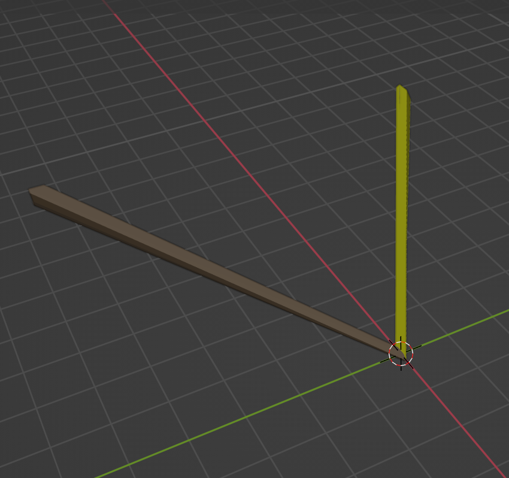

I created a low-poly 3D pencil by blending AI and traditional 3D modeling: I used Gemini to generate shapes and Blender to add the finishing touches.
What happens when you ask an AI to design a pencil? Results varied. I recently embarked on a fun project to create a 3D pencil model for a web page, and it turned into a fascinating experiment in combining AI assistance with traditional 3D modeling.
My initial plan was to see if Gemini could handle the entire process. I started simple, asking for a 3D pencil model. It produced something, but it was more of a 2D sketch than a 3D object. Not noticing the problem at first, I asked it to add components, like an eraser and a graphite tip. That's when it became clear that something was wrong. What I got was less of a pencil and more of an abstract art piece, with the graphite tip floating at a comical angle. Behold:

Clearly, a more structured approach was needed. I decided to break the pencil down into its individual shapes and asked Gemini to generate the OBJ and MTL files one piece at a time. This worked surprisingly well! By focusing on each component separately—the hexagonal prism, eraser, band, and cone—I was able to get accurate models that I could easily stitch together.
However, the graphite tip remained a challenge. No matter how I phrased my requests, Gemini couldn't quite grasp the concept. It would cut out a face from the cone, showing the hollow interior, or layer cones on top of each other to create z-fighting. It was a frustrating and perhaps a bit comical, series of misinterpretations. That's when I turned to Blender. I was able to quickly slice the cone and add a material for the perfect graphite tip.
The final result is a simple, yet effective, 3D pencil model and its corresponding material file. It's a model that could easily fit into a low-poly video game. This project is a testament to the potential of combining AI and human ingenuity. And, of course, a good dose of patience.
Though I could have achieved this in Blender alone, Gemini dramatically lowered the barrier to entry, freeing up mental space. This experience reinforces my belief that the future of creative tools lies in this collaborative approach, where AI amplifies human potential.